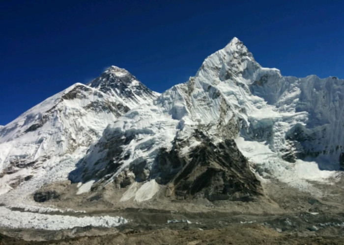
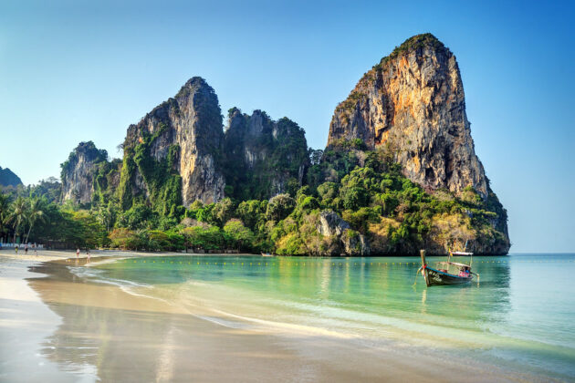
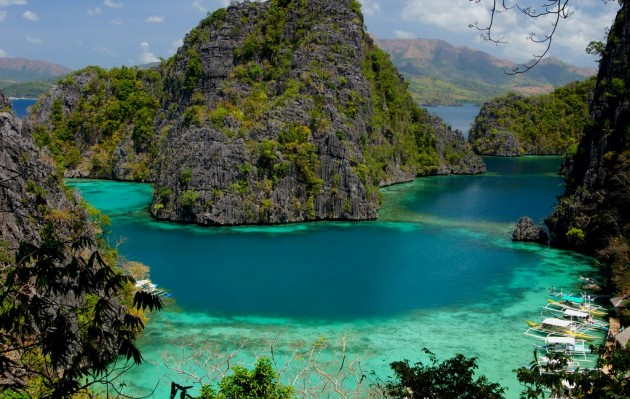

1.Kala Patthar, Nepal
Kala Patthar to tylko nieznaczne trawiaste wzgórze z kamiennym wierzchołkiem leżącym na grzbiecie stromo opadającym z potężnego Pumori. Zasłynęło z niesamowitych widoków na Mount Everest i okoliczne góry, a także ze stosunkowo dużej wysokości, dzięki czemu jest dostępne praktycznie dla każdego turysty.

2. Plaża Railay, Tajlandia
Plaże Railay — wspaniały, charakterystyczny świat, bogaty w platformy widokowe, naturalne jaskinie, laguny i tunele. Nie znajdziesz tu żadnych autobusów, samochodów ani rowerów - tylko łodzie z długim ogonem.
West Railay to centrum turystyczne półwyspu, słynie z wygodnej promenady, sklepów, szanowanych restauracji i luksusowych hoteli. Jej wschodni sąsiad - East Railay - słynie z namorzynów i tajskiej szkoły boksu. Ma tańsze restauracje, bary i bungalowy. Phra Nang - strefa piasku na południu zatoki Railay, która ma wszystkie „składniki” idealnej plaży: płytką wodę, dwie małe wyspy w zasięgu wzroku i rafę koralową

3. Wyspa Cebu, Filipiny
Kanion (kanioning) w Badian czyli poruszanie się w kanionie przy użyciu różnych technik, takich jak wspinaczka, skoki do wody, chodzenie, zjazdy i pływanie. Jest to atrakcja naładowana mega dawką adrenaliny. Trwa tylko albo i aż około 3h i dostarcza ogromnej ilości wrażeń oraz jeszcze większej satysfakcji po przejściu kanionu. Jest to jedna z przygód podczas, której wiele osób przełamuje swoje bariery i robiąc rzeczy, których myśleli, że nigdy nie zrobią. Twoim celem jest zejście w dół rzeki.. Na drodze napotykasz liczne przeszkody, które pokonujesz w rozmaity sposób: zjeżdżasz z naturalnych wodospadów, skaczesz ze skał ( od2 do16m!), pływasz, maszerujesz huśtasz się na linach zamocowanych na drzewach, moczysz się i brudzisz!
